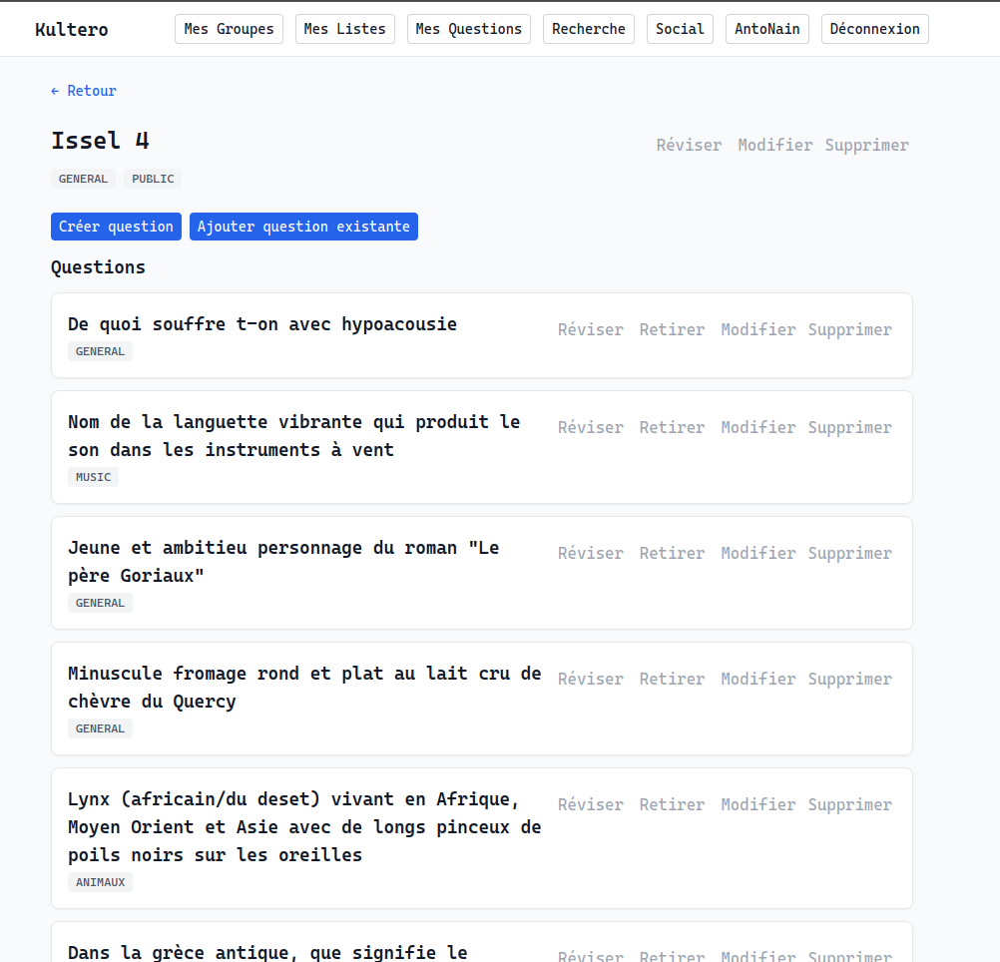
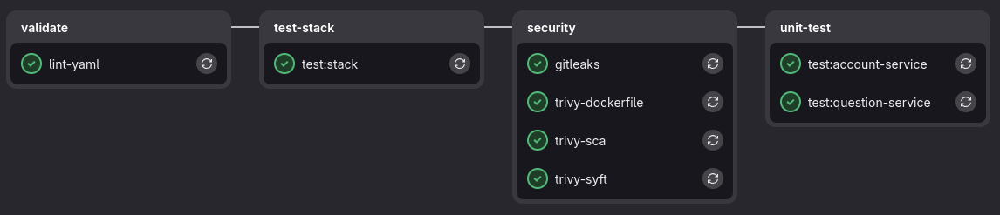
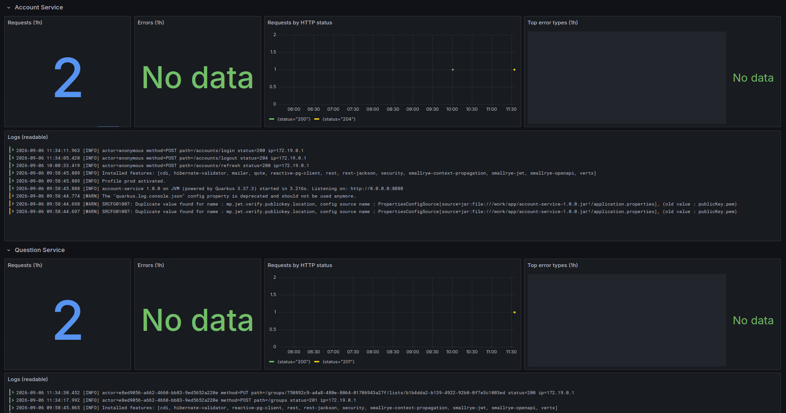
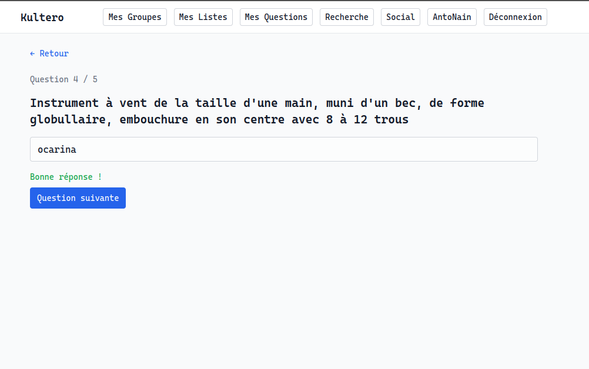
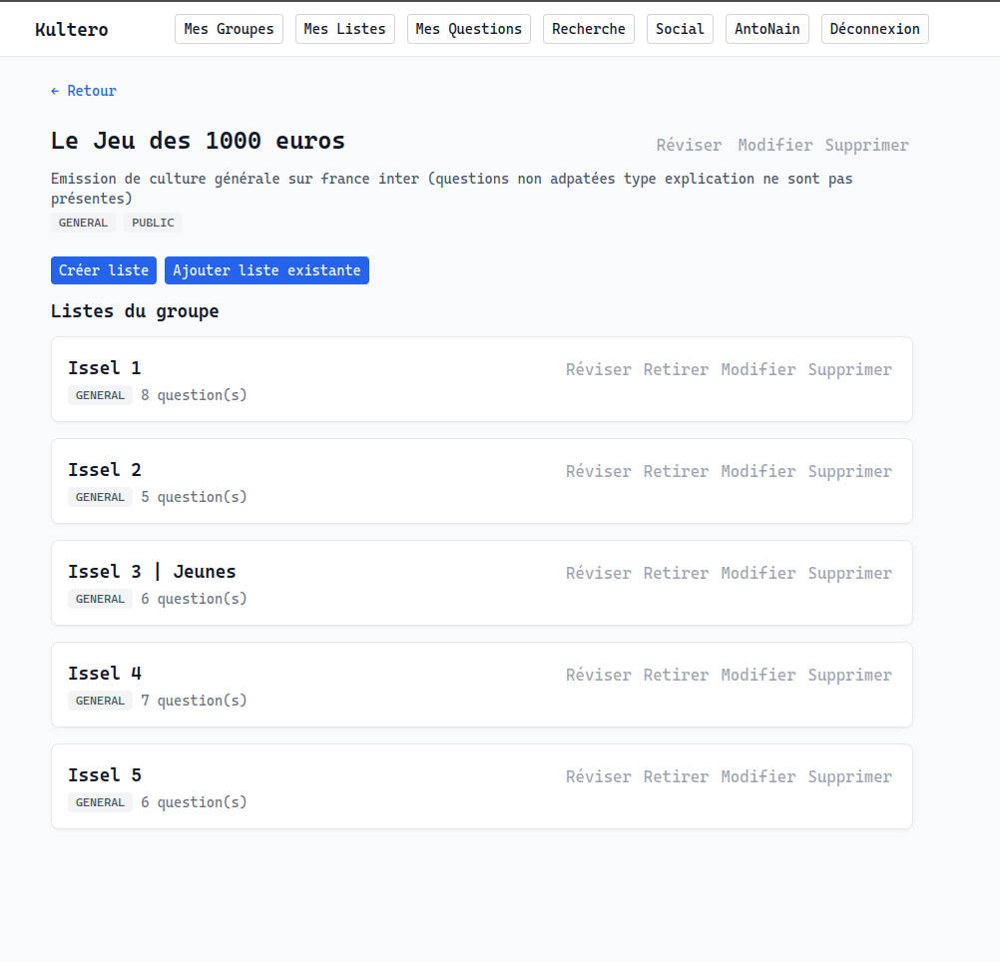
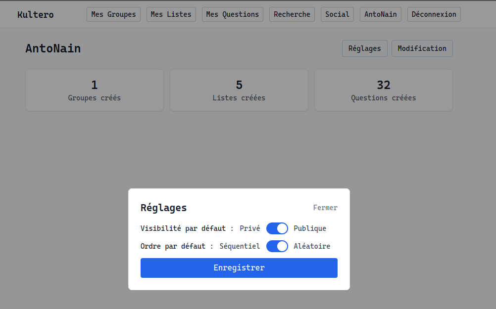
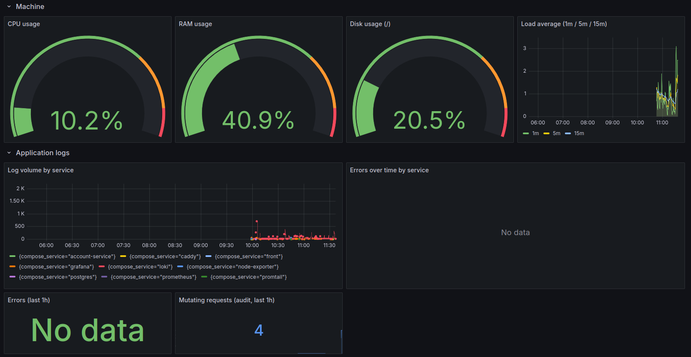

Contexte
Ce projet est né d'un besoin qui est le mien. J'aime la culture générale et afin de progresser, je prenais des notes dans un cahier. Bien que le format papier et le fait d'écrire ont de nombreux avantages, je me suis rendu compte que je connaissais mes notes plus grâce à l'ordre de celles-ci que par la question. La solution à ce problème est de les apprendre dans le désordre !
C'est donc de ce besoin qu'est né Kultero.
Ce projet est en cours et je souhaite le faire grandir et l'améliorer. Cette page va donc suivre l'avancée du projet le plus possible. Restez connecté !
Fonctionnalités
Les notes prennent la forme de questions avec une ou plusieurs réponses. Vous pouvez les ranger dans des listes et les listes peuvent être rangées dans un groupe. Chacune de ces "entités" peut obtenir un label qui permet d'indiquer le domaine de la question (ex: sport, nature, histoire,...).

Vous pouvez donc réviser une question, une liste ou un groupe dans l'ordre de création ou bien dans un ordre aléatoire.
Parties du Projet
Développement
L'API a été réalisée en Java et est composée de plusieurs services (account-service, question-service, ...). J'utilise une base de données Postgres qui tourne sur un conteneur Docker.
Côté front, j'en ai profité pour essayer quelque chose de nouveau en utilisant React avec TypeScript.
CI/CD
Le repo contient une pipeline CI/CD ce qui me permet d'assurer un bon déroulement du développement et du déploiement. Elle comporte 4 grandes étapes:
- Validate: vérification du format de code (lint)
- Build: vérification de la compilation/conteneurisation du code, lancement de Nginx et Postgres
- Scan: vérification de la sécurité du code et des dépendances (GitLeaks, Trivy)
- Test: vérification du bon fonctionnement du code (tests unitaires)
La prochaine étape serait de faire des étapes de CD (continuous deployment). Cela permettrait de déployer directement l'application avec les nouvelles features une fois les étapes préalables validées et une action manuelle lançant cette CD.
Les tests e2e sont pour l'instant vérifiés manuellement ; les automatiser dans la pipeline serait un réel gain de temps. C'est également un prérequis pour des étapes de "continuous deployment".

Observabilité
Cette partie permet d'avoir un aperçu personnalisé de ce qui se passe sur l'application et la machine. Dans notre cas, on peut voir l'utilisation du CPU, l'espace disque, le nombre de requêtes en temps réel et bien d'autres métriques. Cela permet d'analyser, de comprendre et de réagir à ce qui se passe.
Afin de faire tout ça, j'ai choisi d'utiliser Loki, Prometheus, Promtail, Node-exporter et Grafana.

Backup
À venir...
Galerie




Ce que j'en retiens
J'ai donc appris comment fonctionnait une web app et j'essaie de suivre les bonnes pratiques apprises durant mes cours, projets et recherche sur internet (CI/CD, Observabilité, Backup). J'ai touché à beaucoup de choses différentes que je n'avais jamais faites auparavant, avec par exemple la création et la gestion de tokens JWT et de refresh tokens. C'était l'opportunité pour mettre en place le security by design qui nous a été transmis en cours. J'espère continuer à apprendre car je compte faire grandir ce projet jusqu'à arriver à quelque chose qui me satisfait.